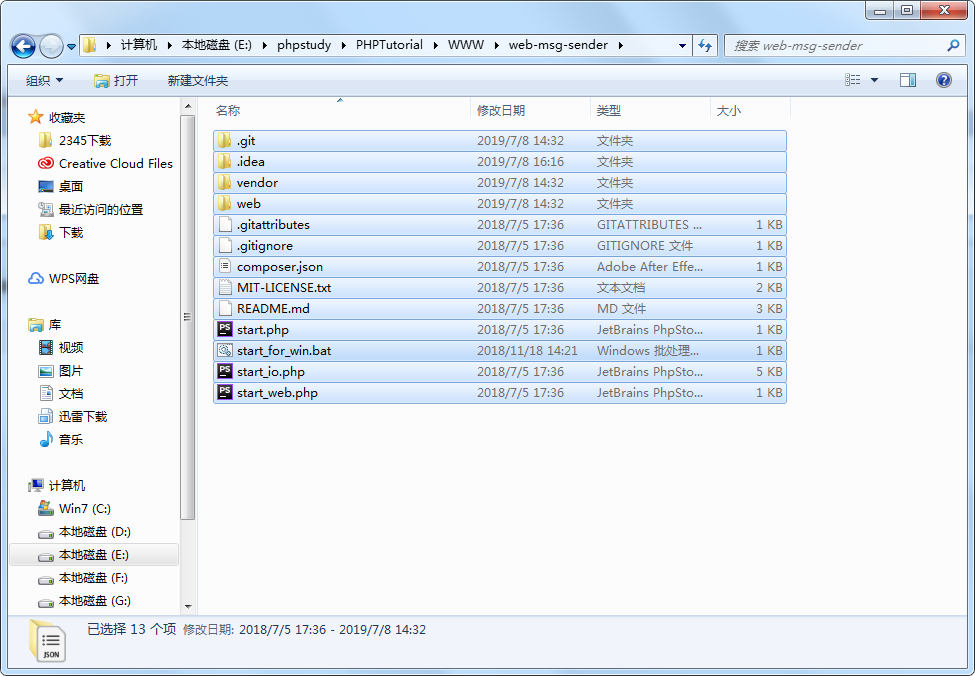
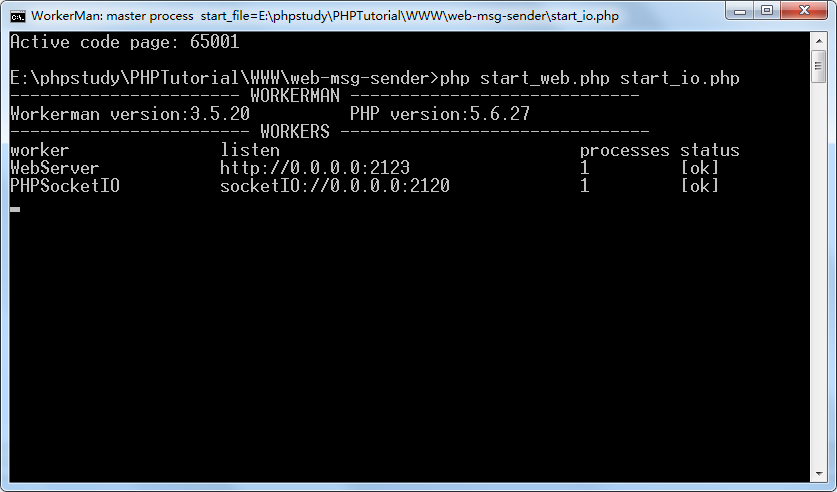
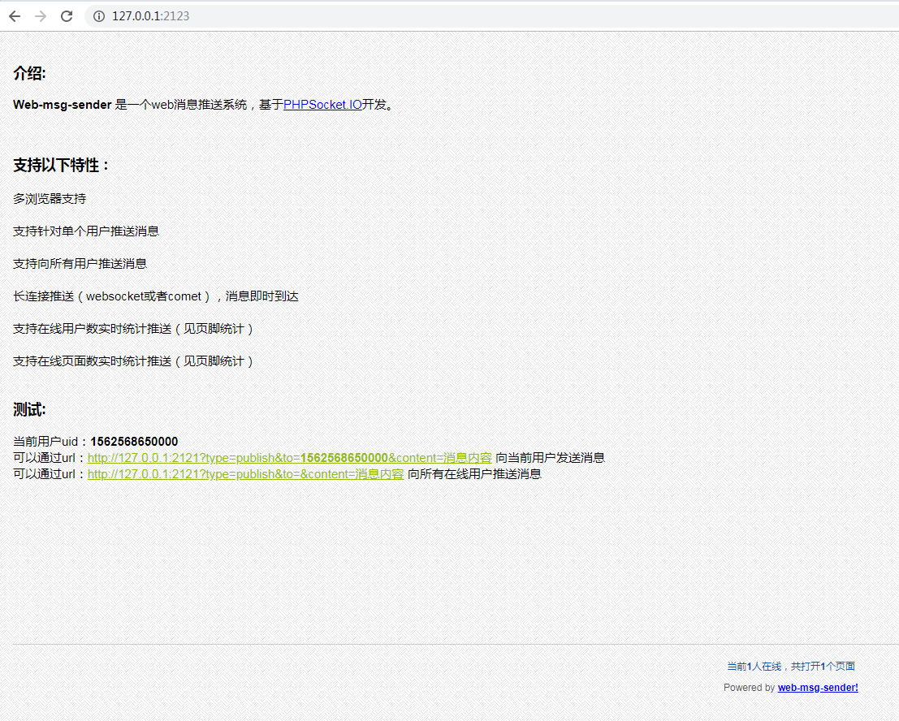
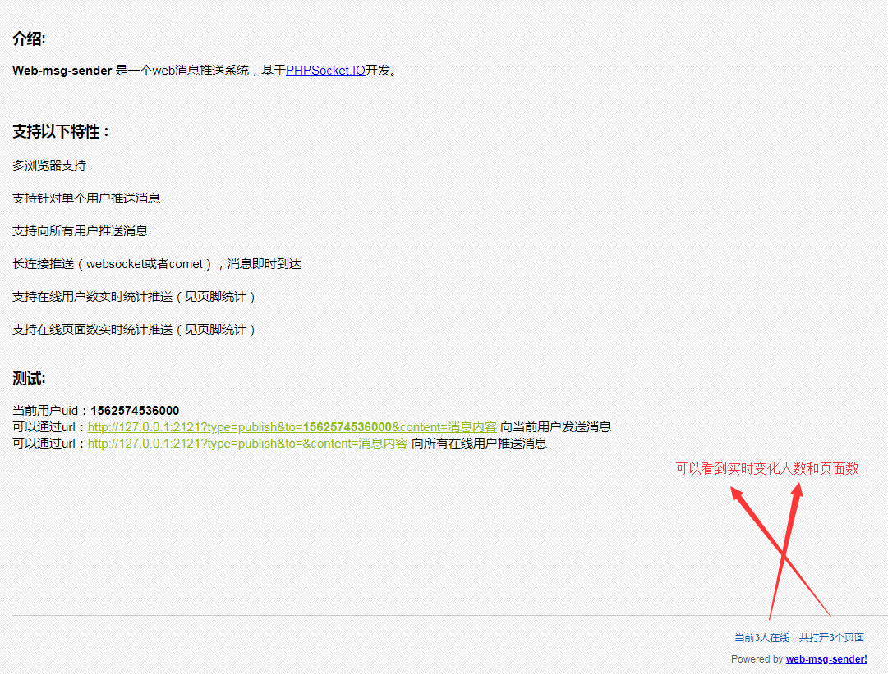
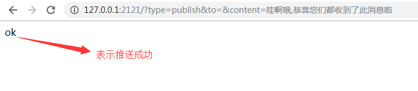
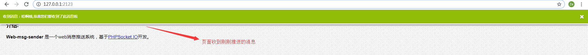

一、官方下载地址：https://www.workerman.net/web-sender
二、解压至任意目录下，双击start_for_win.bat，效果如下图：


三、打开Chrome浏览器访问：http://127.0.0.1:2123，如下图：

四、新开浏览器窗口和换浏览器访问http://127.0.0.1:2123，可以看到如下效果：

五、根据页面提示测试消息推送，效果如下图：

